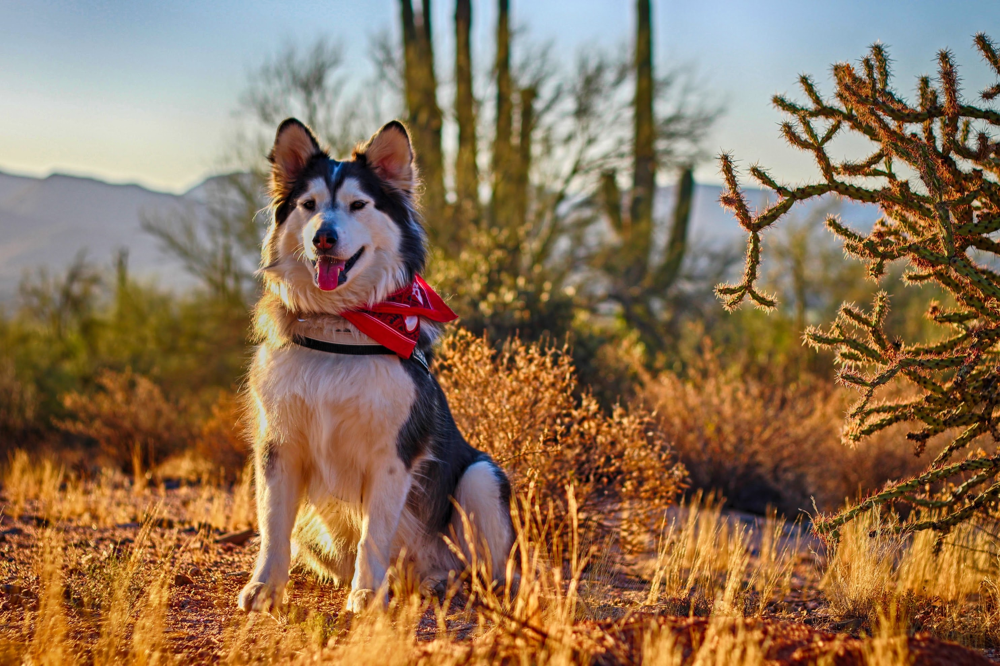

Affectionate, Loyal, Playful the Alaskan Malmute gets up to 25inches tall and has an average weight of 85 pounds (male) and 75 (for females). These pups are part of the working group and have lots of energy. They will need someone who is active and willing to invest time playing, walking and getting their pups energy out.
The Alaskan Malamute is among the oldest of the sled dog breeds of the Arctic. They are believed to be a descendant of the domesticated wolf-dogs who accompanied the Paleolithic hunters that crossed the land bridges of the Bering Strait and migrated into North America roughly 4,000 years ago. The breed’s name is derived from the Mahlemiut, Inuit people who resided in Kotzebue Sound in northwestern Alaska. The dog the Mahlemiut people developed was primarily a sledge dog, created to work in packs to haul heavy loads at low speeds over long distances. However, they were also used for carrying packs in the summer, locating seal breathing holes in the ice, and distracting bears on hunts. Other Arctic dog breeds, like the Siberian Husky, pull lighter loads on sleds at faster speeds. Huskies are racers; Malamutes are freighters. The Inuit culture spans from the coasts of Alaska to the coasts of Greenland. Because of this distance, different strains developed in the Malamute breed. The AKC recognized the original Kotzebue strain in 1935. After WWII, the breed’s numbers plummeted until there were very few dogs registered. In response, during the late 1940s and ’50s, the AKC opened the studbook to include the M’Loot and Hinman strains as well. Today, the Malamute’s gene pool is made up of all three of these strains, with Ch. Toro of Bras Coupe being the first dog to unite them.
Resources: ACK Alaskan Malamute
© 2020 All rights reserved.